Une application de bureau qui tient ton agenda, tes contacts, tes devis, tes documents et tes décisions au même endroit, avec une intelligence artificielle que tu choisis et des données qui restent sur ta machine. Ce guide fait le tour de chaque écran, tel qu'il se présente dans la version 0.66.
THÉRÈSE, version 0.66.0macOS, Windows et Linux. Téléchargement sur synoptia.fr/therese/alpha
Indépendants, dirigeants de TPEEt la communauté des testeurs de l'alpha, sur Discord
Septembre 2026Captures réalisées le 3 septembre 2026 sur l'application installée
Chaque rubrique tient sur une page : une ou deux captures d'écran, les zones importantes, puis les gestes dans l'ordre. Les captures viennent de l'application installée, version 0.66.0, avec un profil de démonstration (Marie Exemple, Atelier Exemple) et des contacts, projets, factures et tâches inventés.
THÉRÈSE est une application de bureau. Tu lui parles comme à une assistante, elle lit tes contacts, ton agenda, tes documents, tes factures, et elle prépare ce que tu lui demandes. Tout ce qu'elle sait est rangé sur ta machine. L'intelligence artificielle qui répond est celle que tu choisis, y compris un modèle local qui ne sort jamais de l'ordinateur.
Ses trente capacités sont regroupées en six familles. C'est la carte de tout ce que tu vas trouver dans ce guide.
Voir l'essentiel et transformer les informations entrantes en actions.
Suivre les personnes, les projets et le cycle commercial de bout en bout.
Passer d'une idée à un livrable utilisable, dans le bon format.
Chercher, vérifier, comparer et éclairer une décision importante.
Faire exécuter des tâches répétitives par des actions, outils et agents.
Garder la main sur les données, les modèles, les coûts et le comportement.
Tes données restent chez toi. Contacts, projets, factures, conversations et documents indexés vivent dans une base locale, chiffrée, dans ton dossier personnel. Les clés d'accès aux services d'IA sont rangées dans le trousseau du système.
Quant au cerveau, c'est toi qui le choisis : une douzaine de services d'IA sont pris en charge, dont Claude, GPT, Gemini, Mistral, Grok, OpenRouter, Perplexity, DeepSeek, et Ollama pour faire tourner un modèle sur ta propre machine. Rien ne part vers un service en ligne sans un accord donné au premier usage.
Et avant d'agir, elle demande. Envoyer un e-mail, créer un rendez-vous, écrire un contact ou un document : chaque effet extérieur passe par une carte de confirmation. Le pied de l'écran le rappelle en permanence.
Presque tout existe sous deux formes. Dans la conversation, Thérèse agit dans un contexte : elle prépare le rendez-vous de demain en croisant l'agenda et le CRM, ou liste les derniers devis avant d'en rédiger un nouveau. Dans une vue complète, tu administres un domaine : la liste des contacts, la grille de l'agenda, le tableau des factures.
Les boutons « Ouvrir Agenda », « Ouvrir Contacts » ou « Ouvrir Devis et factures » font passer de l'une à l'autre. « Retour », en haut à gauche, ramène toujours à la conversation.
THÉRÈSE s'installe comme n'importe quelle application : un fichier .dmg sur Mac, un installeur .exe sur Windows, un paquet .deb sur Linux, tous téléchargeables sur synoptia.fr/therese/alpha. Au premier lancement, six étapes préparent ton espace de travail. Aucune ne demande de compte en ligne.
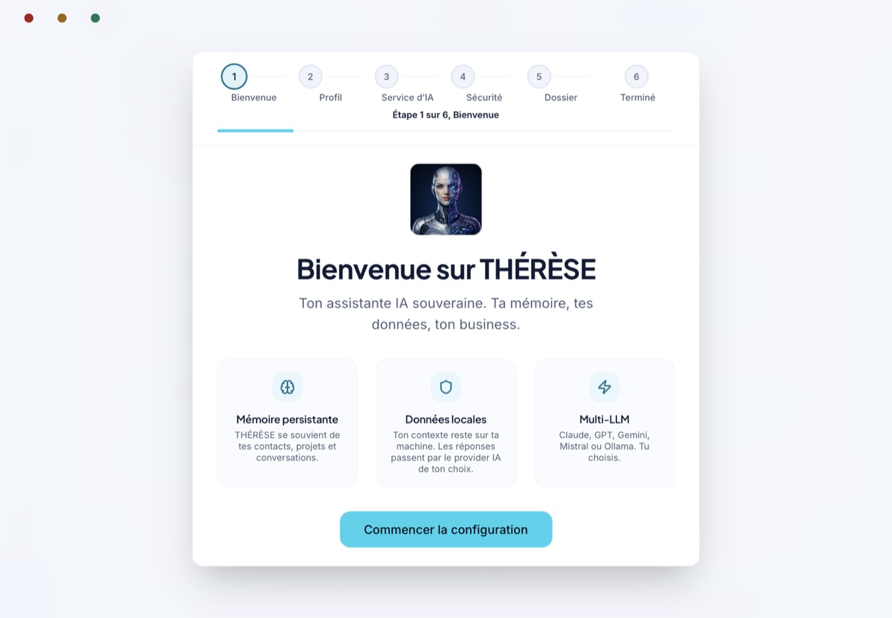
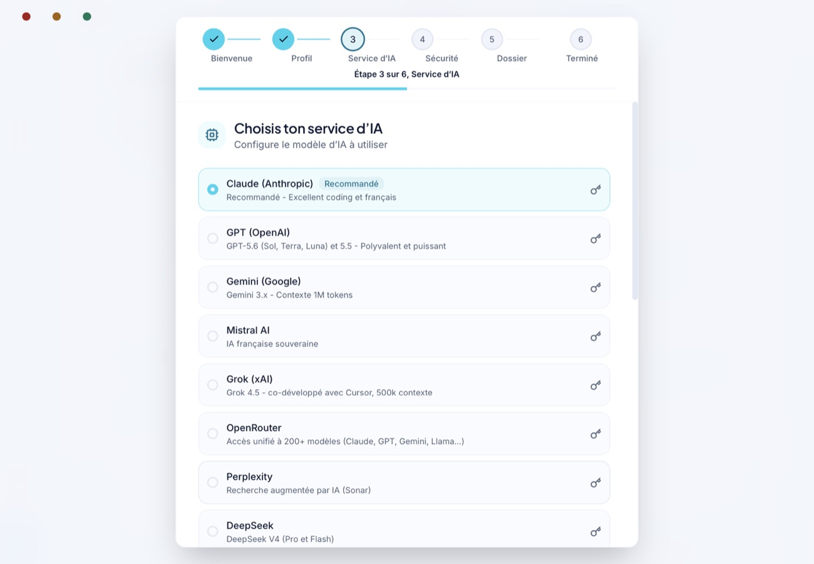
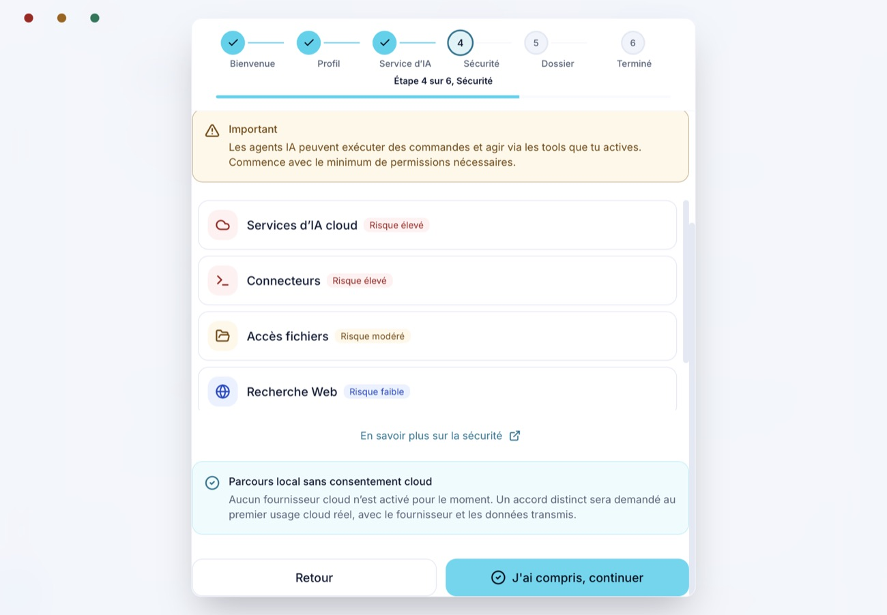
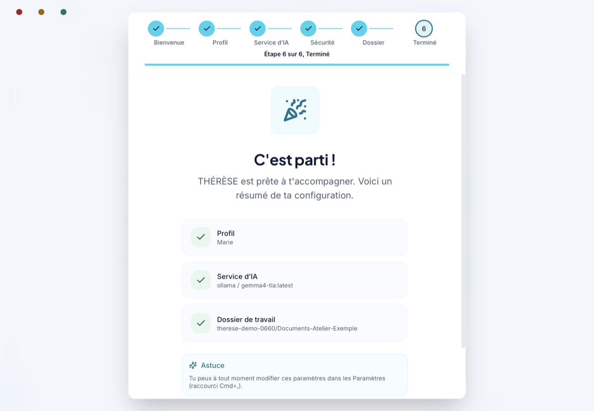
L'étape Sécurité l'annonce : tant qu'aucun fournisseur en ligne n'est activé, tu es sur un parcours local sans consentement cloud. Le jour où une fonction a besoin d'un service en ligne, Thérèse demande un accord distinct, en nommant le fournisseur et les données transmises.
Tout part de l'accueil. Thérèse te salue, regroupe ce qui mérite ton attention, et te laisse agir depuis un seul champ de saisie. Le reste de l'application s'ouvre par-dessus, et « Retour » ramène ici.
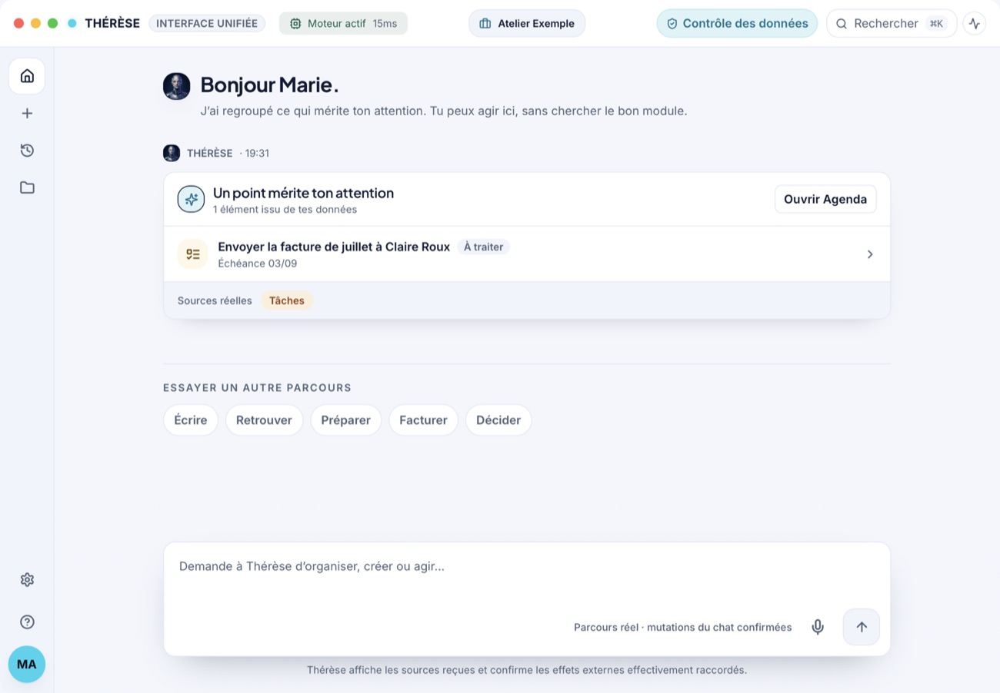
1 2 3 4 5 6 7 8 9 10 11Deux portes mènent à tout : la palette de commandes, au clavier, et le catalogue des capacités, à la souris. Les deux indexent les mêmes trente capacités et les cinq parcours.
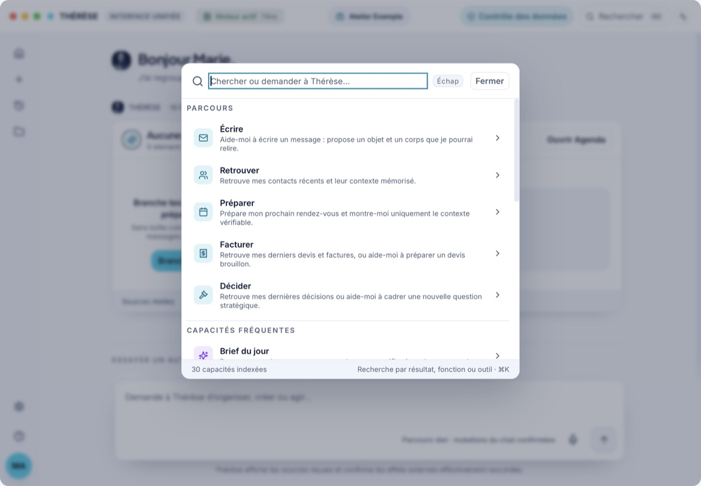
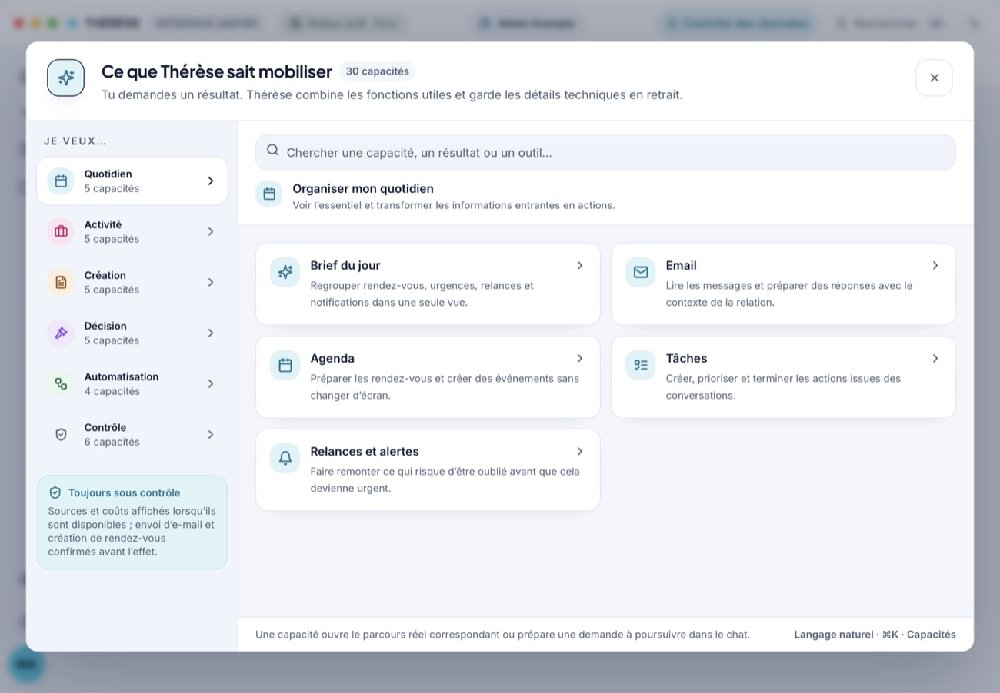
Icône dossier du rail, ou « Plus d'outils ». À gauche, les six familles avec leur nombre de capacités. À droite, une carte par capacité : son nom, ce qu'elle fait, et une flèche. Cliquer une carte ouvre le parcours réel correspondant, ou prépare une demande dans le composeur quand la capacité passe par la conversation.
Le champ « Rechercher une capacité, un résultat ou un outil » filtre les six familles d'un coup. L'encart « Toujours sous contrôle » rappelle la règle : sources et coûts affichés quand ils existent, envoi d'e-mail et création de rendez-vous confirmés avant l'effet.
| Raccourci | Effet |
|---|---|
| ⌘ + K | Palette de commandes |
| ⌘ + B | Tiroir des conversations |
| ⌘ + , | Paramètres |
| Échap | Ferme la couche du dessus : palette, panneau, fenêtre, puis la vue |
Sous le brief, cinq verbes : Écrire, Retrouver, Préparer, Facturer, Décider. Chacun ouvre un parcours dans la conversation, alimenté par tes données réelles, avec ses sources affichées et un bouton vers la vue complète. C'est la façon la plus rapide de faire quelque chose d'utile dès la première minute.
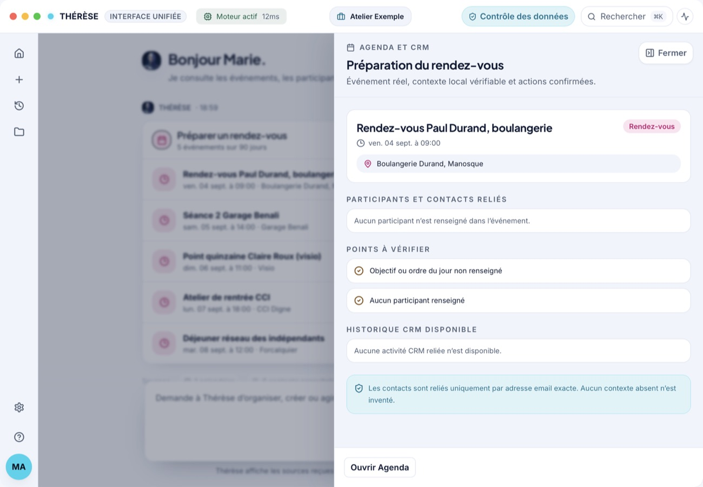
Thérèse liste les événements à venir sur 90 jours. Un clic sur l'un d'eux ouvre le panneau « Agenda et CRM » : l'événement, le lieu, les participants, les points à vérifier (objectif absent, participant manquant) et l'historique CRM disponible.
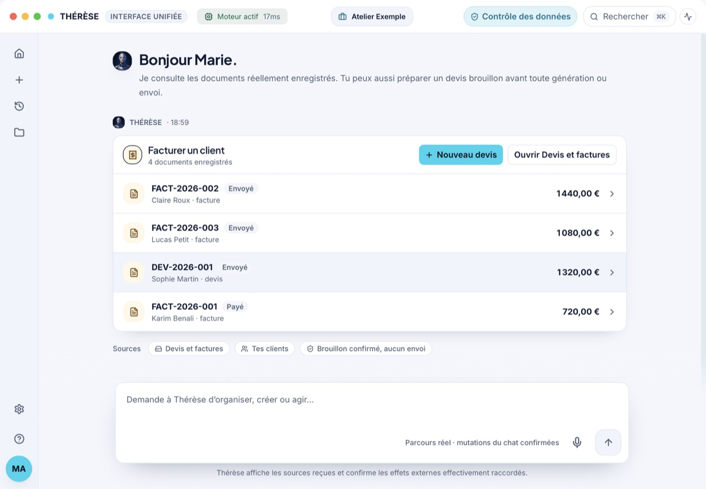
La carte affiche les derniers devis et factures réellement enregistrés, avec numéro, client, statut et montant. Deux boutons : + Nouveau devis ouvre le formulaire, Ouvrir Devis et factures mène à la vue complète (page 10).
Les sources s'affichent sous la carte : « Devis et factures », « Tes clients », et la promesse « Brouillon confirmé, aucun envoi ». Rien ne part chez un client depuis ce parcours.
| Parcours | Ce que Thérèse fait | Ce qu'il faut avoir branché |
|---|---|---|
| Écrire | Propose un objet et un corps de message que tu relis avant tout envoi. | Rien pour rédiger. Une boîte mail pour envoyer. |
| Retrouver | Retrouve tes contacts récents et le contexte mémorisé pour chacun. | Des contacts dans la mémoire locale. |
| Préparer | Prépare le prochain rendez-vous en ne montrant que le contexte vérifiable. | Un agenda (Google, CalDAV ou local). |
| Facturer | Liste les derniers devis et factures, aide à préparer un devis brouillon. | Un profil de facturation complet (SIRET, adresse). |
| Décider | Relit tes dernières décisions ou cadre une nouvelle question pour le Board. | Un service d'IA. La délibération ne démarre qu'après confirmation. |
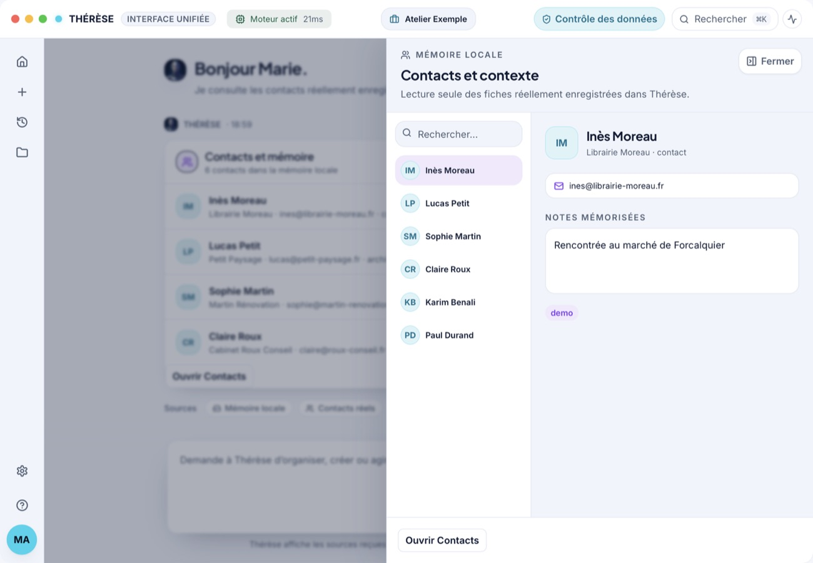
Le panneau « Mémoire locale » est en lecture seule : à gauche la liste et la recherche, à droite la fiche (société, e-mail, notes mémorisées, étiquettes). Pour modifier, « Ouvrir Contacts » (page 9). Dans la conversation, Thérèse peut aussi créer ou compléter un contact, avec confirmation.
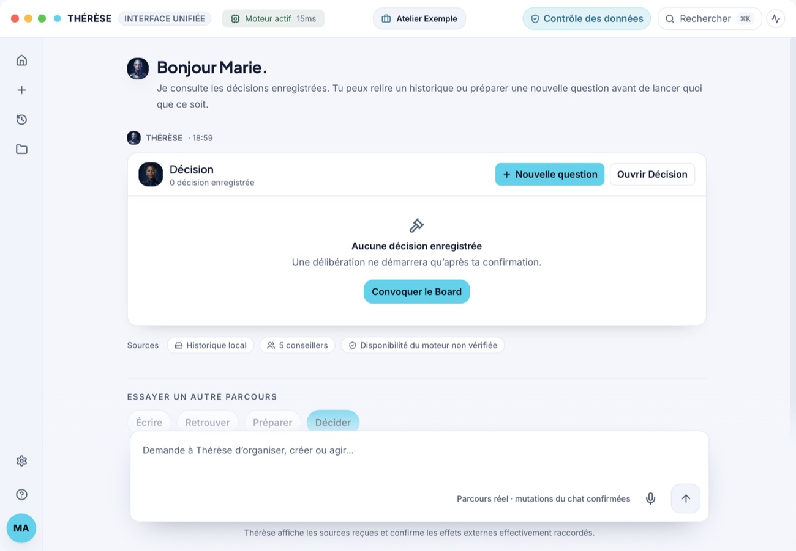
La carte rappelle les décisions déjà enregistrées, avec leur historique. « Nouvelle question » ou « Convoquer le Board » ouvre la délibération à cinq conseillers (page 12). Le message est clair : « Une délibération ne démarrera qu'après ta confirmation », parce qu'elle consomme du service d'IA.
Le composeur accepte une phrase ordinaire : « prépare un point sur le Garage Benali », « fais-moi un devis pour Sophie Martin, trois séances à 600 € », « qu'est-ce que dit le compte-rendu de visite chez Martin ? ». Thérèse mobilise ce qu'il faut : la mémoire des contacts, les documents indexés, l'agenda, les factures. Elle répond en citant ses sources, et propose des actions sous forme de cartes.
Une carte d'action (envoyer cet e-mail, créer ce rendez-vous, enregistrer ce contact) attend ton clic. Tant que tu n'as pas confirmé, rien n'est parti. Une carte que tu ignores n'agit jamais toute seule.
Les commandes rapides. Certaines demandes n'ont pas besoin d'IA : ouvrir une vue, produire un fichier Office, afficher l'aide. Elles s'écrivent entre accolades, par exemple {action: ouvrir agenda}, et s'exécutent sur-le-champ. Le menu / les liste.
Le tiroir des conversations (icône horloge du rail, ou ⌘ + B) garde l'historique, regroupé par période. « Nouvelle conversation » repart de zéro. Chaque conversation peut être rattachée à un projet : Thérèse ne lit alors que les documents et contacts de ce projet.
Les variables. Un mot entre accolades simples, comme {signature} ou {offre}, est remplacé par le contenu que tu as enregistré dans Paramètres, onglet Services. Pratique pour ne jamais recopier un texte métier.
Le carnet d'adresses et le suivi commercial sont deux vues d'un même fichier. Contacts administre les fiches, Pipeline suit l'avancée de chaque relation, de la prise de contact à la signature.
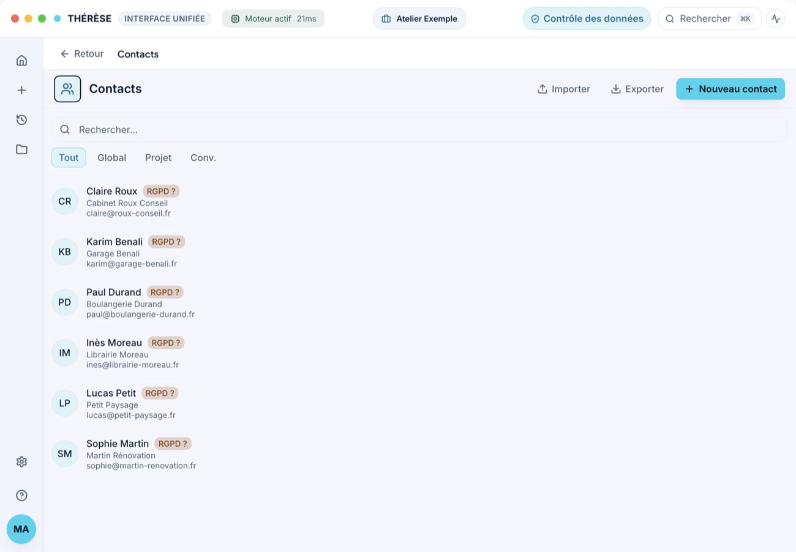
En haut : Importer, Exporter, + Nouveau contact. Sous la recherche, quatre filtres disent d'où vient chaque fiche : Tout, Global (visible partout), Projet (rattaché à un projet), Conv. (créé au fil d'une conversation).
La pastille RGPD ? signale une fiche dont le volet RGPD n'est pas renseigné : base légale (consentement, contrat, intérêt légitime, obligation légale), consentement obtenu, dates de collecte et d'expiration. Ouvrir la fiche permet de les compléter, de l'anonymiser ou de l'exporter.
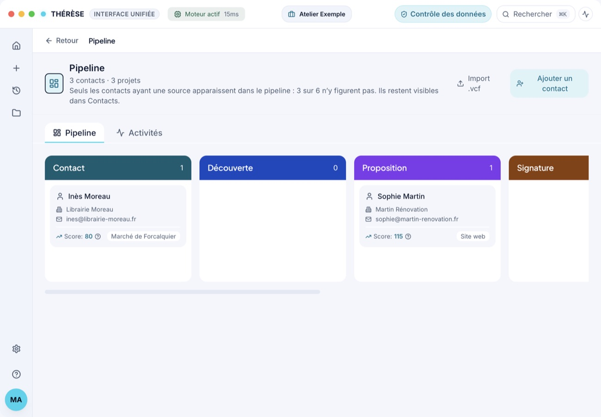
Une colonne par étape : Contact Découverte Proposition Signature, puis Livraison, Actif et Archive en faisant défiler. Une carte par contact avec sa société, son e-mail, sa source (marché, site web, recommandation) et un score de potentiel de 0 à 100, calculé depuis le profil et l'activité ; le point d'interrogation l'explique.
Glisser une carte d'une colonne à l'autre change l'étape. L'onglet Activités journalise les e-mails, appels et rendez-vous liés à chaque contact.
Trois types de documents, devis, factures et avoirs, numérotés en série, avec un PDF prêt à envoyer. Les montants s'écrivent à la française, la TVA se choisit ligne par ligne, et le profil de facturation (SIRET, adresse, TVA intracommunautaire) alimente l'en-tête.
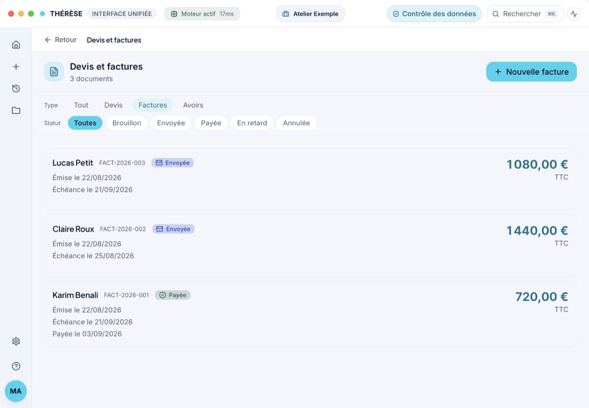
Deux rangées de filtres. Type : Tout, Devis, Factures, Avoirs. Statut : Toutes, Brouillon, Envoyée, Payée, En retard, Annulée. Chaque carte porte le client, le numéro, le statut, les dates d'émission, d'échéance et de paiement, et le montant TTC. Un clic ouvre le document.
| Statut | Ce que cela veut dire |
|---|---|
| Brouillon | Créé, modifiable, jamais transmis. |
| Envoyée | Transmise au client, en attente de réponse ou de règlement. |
| Payée | Réglée, avec la date de paiement. |
| En retard | Échéance dépassée sans paiement. |
| Annulée | Sans suite, conservée pour la trace. |
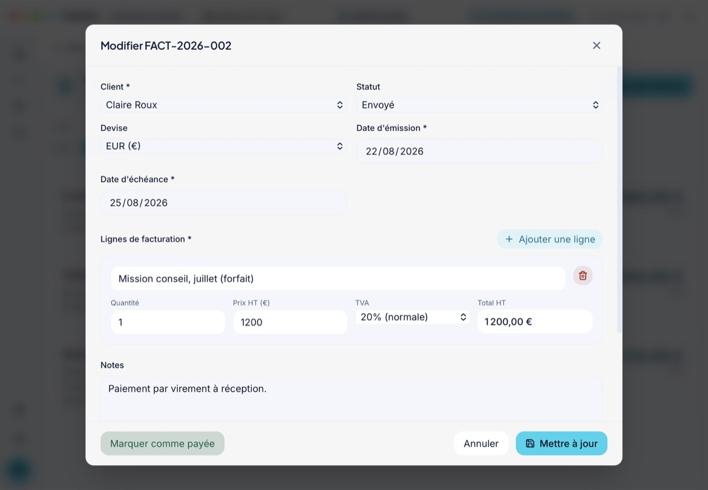
Trois tableaux à colonnes, tous à glisser-déposer, pour ne rien laisser filer : les projets pour le cadre, les tâches pour le concret, les relances pour ce qui a une échéance.
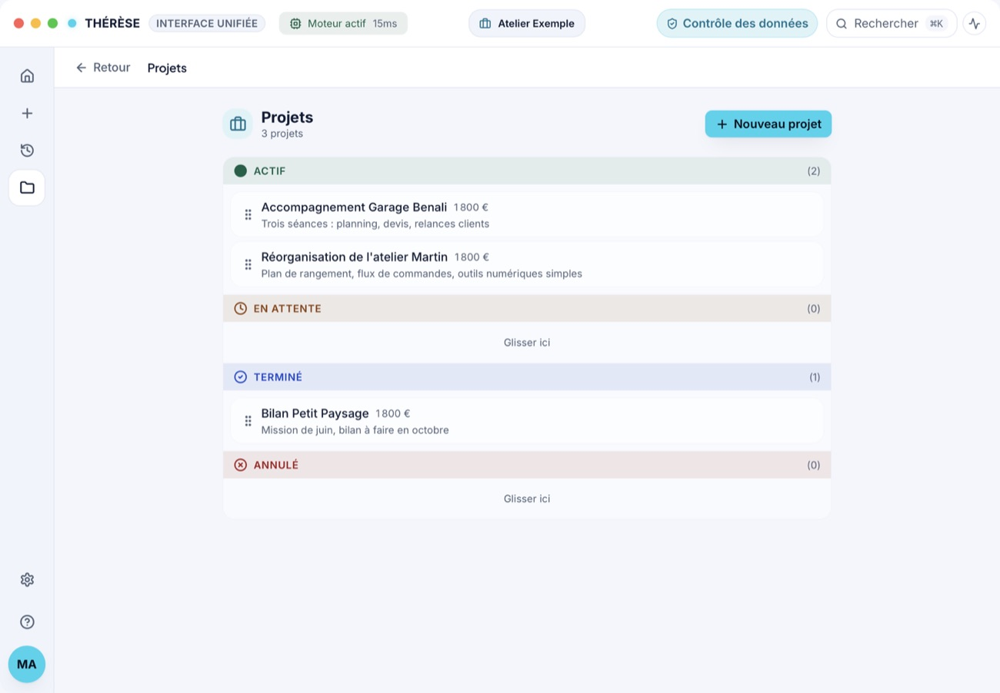
Un projet relie un objectif, des contacts, un budget, des documents et des tâches. La carte montre le nom, le budget et la description ; la poignée à gauche la déplace entre les quatre colonnes. Ouvrir un projet permet d'y joindre des fichiers, que Thérèse lira quand une conversation est rattachée à ce projet.
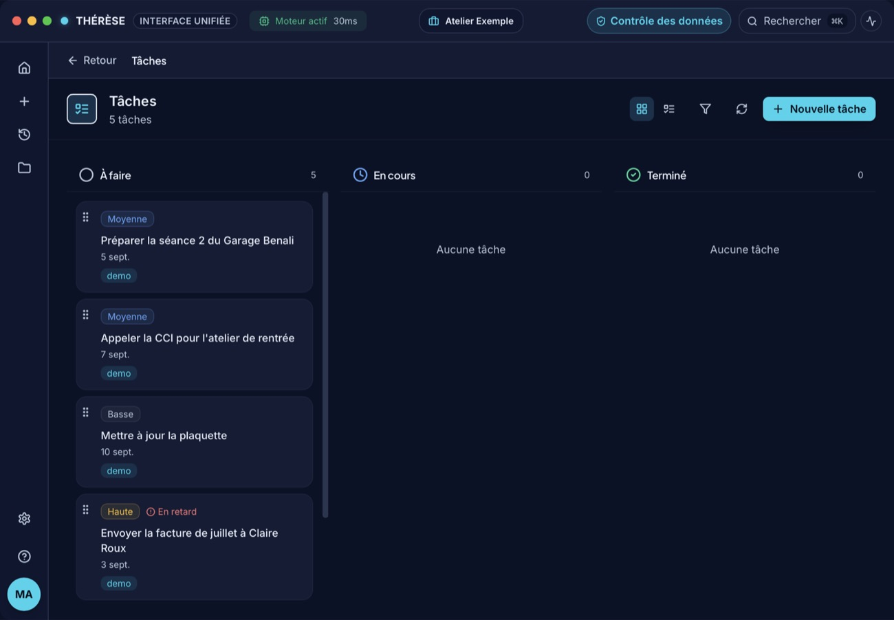
Chaque carte porte sa priorité (Moyenne, Basse, Haute), son échéance, ses étiquettes, et la mention En retard quand la date est passée. En haut : vue en colonnes ou en liste, filtre par projet et par étiquette, rafraîchir, + Nouvelle tâche. Les tâches créées depuis une conversation arrivent ici.
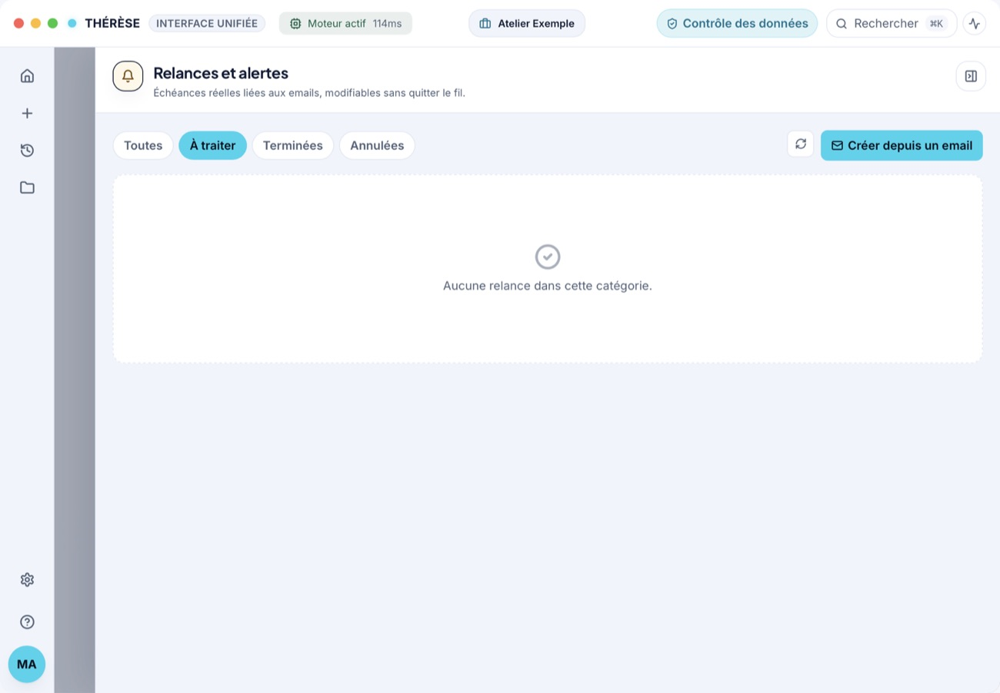
Des échéances liées à des e-mails : un devis envoyé à relancer, une réponse attendue. Filtres Toutes, À traiter, Terminées, Annulées, et le bouton « Créer depuis un email ». Une relance due aujourd'hui apparaît dans le brief du jour ; elle est modifiable sans quitter le fil.
Pour une décision qui compte, Thérèse convoque cinq conseillers qui ne sont pas d'accord entre eux, et c'est le but. Chacun lit ta question avec son angle, puis une synthèse rapproche les avis. Tu gardes la décision.
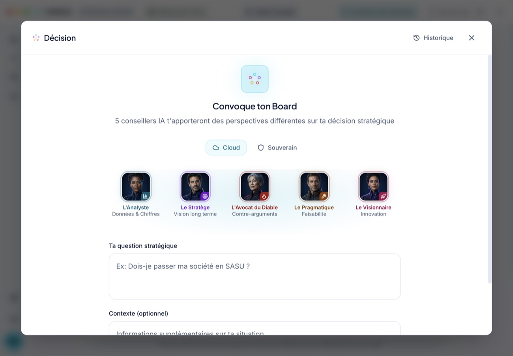
| Conseiller | Son angle |
|---|---|
| L'Analyste | Données et chiffres : ce que disent les faits. |
| Le Stratège | Vision long terme : où cela te mène dans trois ans. |
| L'Avocat du Diable | Contre-arguments : ce qui peut mal tourner. |
| Le Pragmatique | Faisabilité : ce que ça coûte à mettre en œuvre. |
| Le Visionnaire | Innovation : ce que tu n'as pas encore envisagé. |
Thérèse lit tes documents et en produit de nouveaux. Le pont entre les deux est le dossier de travail, choisi à la mise en route.
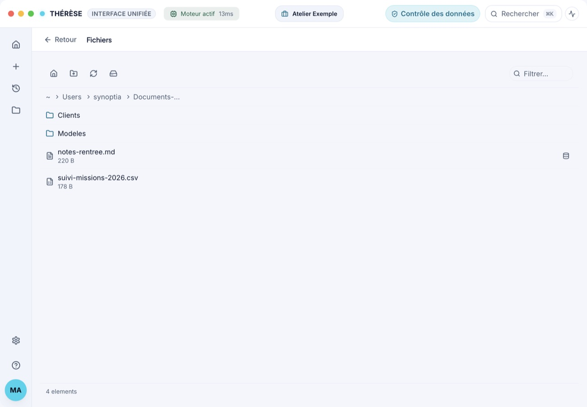
L'explorateur (famille Décision, carte « Fichiers ») s'ouvre sur ton dossier de travail. Les icônes du haut : maison, dossier parent, rafraîchir, choisir un dossier. Le fil d'Ariane remonte d'un clic. Sur chaque fichier, l'icône à droite l'indexe : Thérèse le découpe, le comprend et pourra le citer.
Une fois indexé, un document se retrouve de deux façons : par son nom (« ouvre le compte-rendu de visite ») et par le sens (« qu'avait-on dit sur le rangement de l'atelier ? »). Formats lus : texte, Markdown, PDF, Word, Excel, CSV.
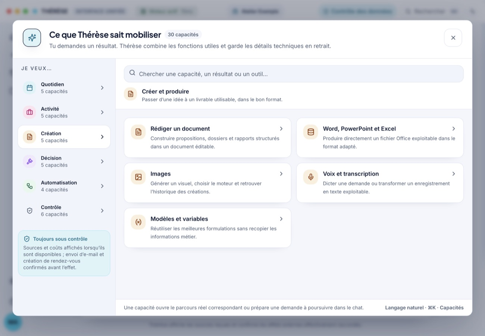
| Capacité | Ce qu'elle fait |
|---|---|
| Rédiger un document | L'atelier documentaire : une trame par sections, une rédaction guidée section par section, des pistes, un export en Markdown ou Word. |
| Word, PowerPoint et Excel | Un fichier Office prêt à ouvrir, produit depuis une demande. Le bouton de téléchargement apparaît dans la réponse. |
| Images | Génère un visuel avec le moteur choisi (GPT Image 2, Nano Banana 2, Fal Flux Pro) et garde l'historique des créations. |
| Voix et transcription | Dicte une demande, ou transforme un enregistrement en texte. Voix locale possible. |
| Modèles et variables | Tes formulations qui reviennent, et des variables comme {signature} remplacées dans le chat. |
Quatre capacités pour confier à Thérèse ce qui se répète : des actions en plusieurs étapes, des connecteurs vers des outils extérieurs, des skills pour tes processus, et deux agents, Katia et Zézette, qui améliorent l'application elle-même.
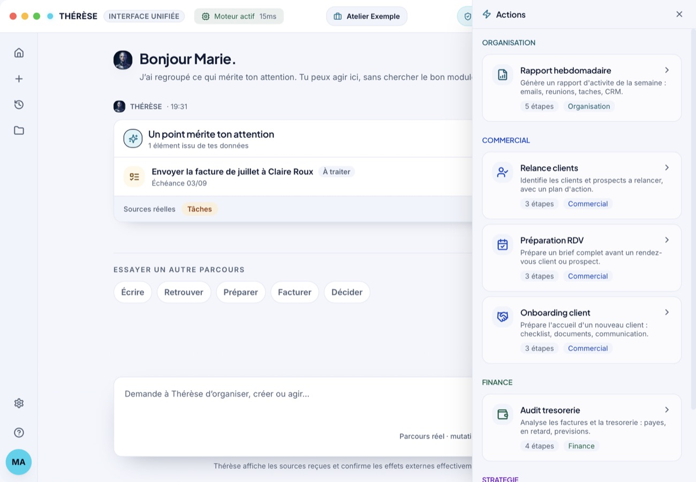
Six actions livrées, rangées par thème : Rapport hebdomadaire (organisation), Relance clients, Préparation RDV, Onboarding client (commercial), Audit trésorerie (finance), Veille concurrentielle (stratégie). Chacune enchaîne trois à cinq étapes, lues dans tes données locales, avec un résultat par étape et un résumé inséré dans la conversation.
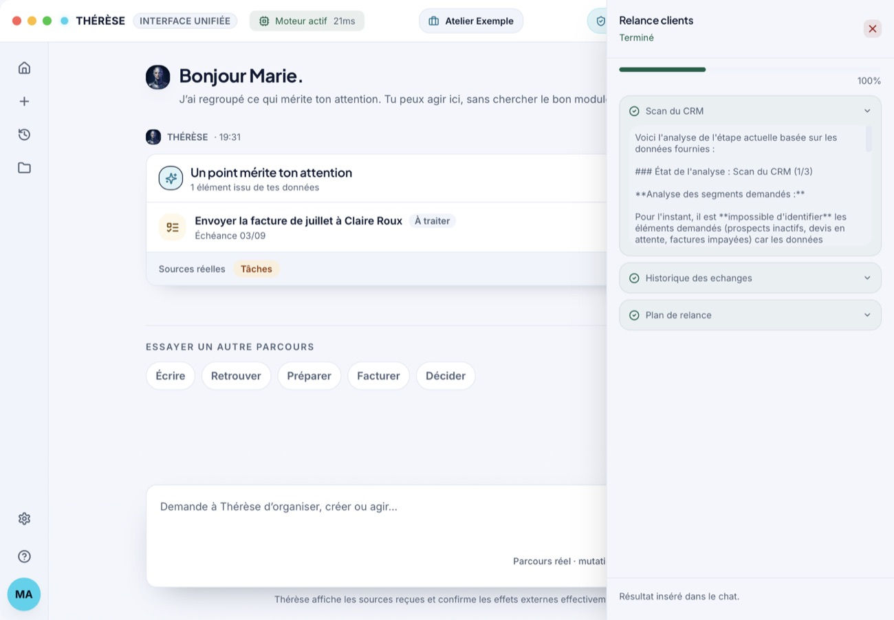
Connecteurs. Des serveurs MCP qui donnent à Thérèse des outils extérieurs (système de fichiers, web, services). Paramètres, onglet Outils : des Presets prêts à installer, ou « Ajouter » le tien. Chaque outil activé est une permission de plus ; l'étape Sécurité l'a classé « risque élevé ».
Skills et commandes. Un processus que tu répètes (une relance type, une trame de compte-rendu) devient une commande que tu relances en langage naturel.
Améliorer THÉRÈSE. En Mode Contributeur, tu confies une mission cadrée à Katia (qui guide) et Zézette (qui développe). Elles proposent une modification que tu relis avant application. Cela suppose un poste qui a le dépôt de code de THÉRÈSE (l'onglet Agents vérifie Git et le dépôt) : c'est l'outil des contributeurs, pas un écran du quotidien.
Icône engrenage du rail, ou ⌘ + ,. Neuf onglets, et en haut de la colonne un interrupteur Mode Contributeur qui dévoile les fonctions avancées (Outils, Agents). Les réglages s'enregistrent onglet par onglet.
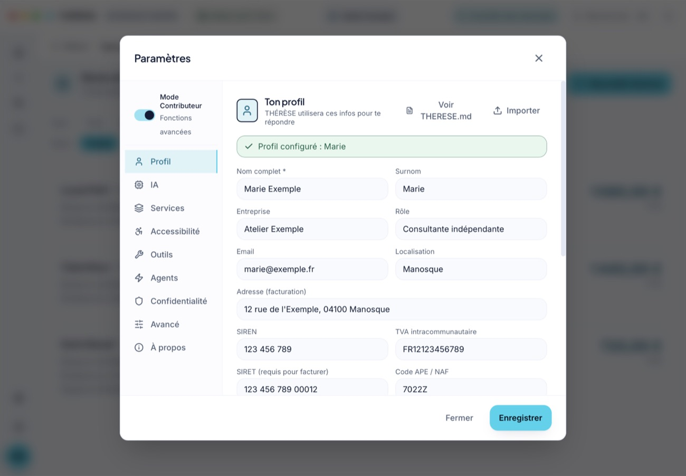
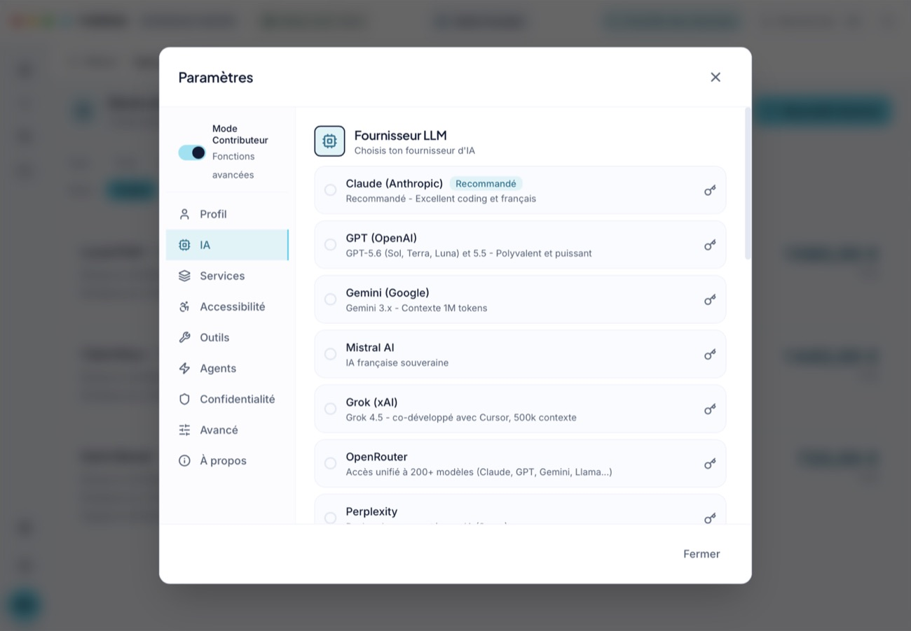
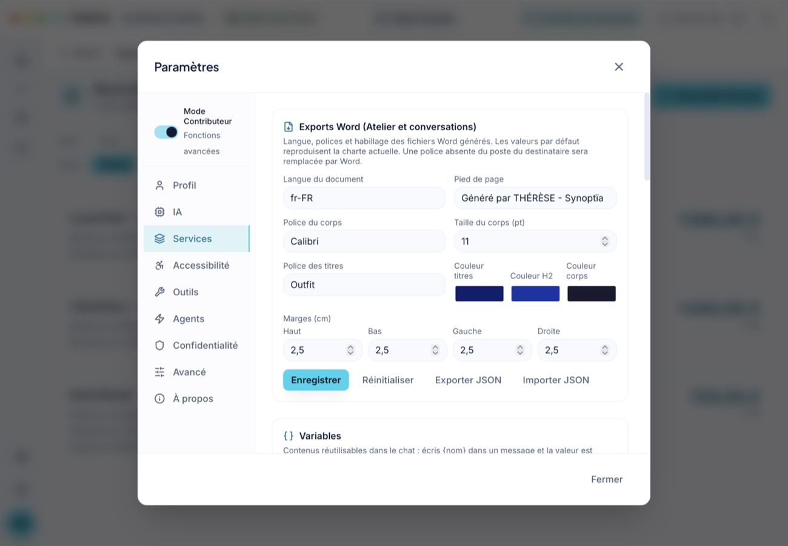
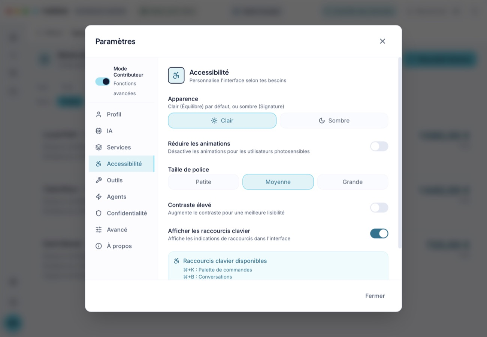
Profil. Ce que Thérèse sait de toi : nom, surnom, entreprise, rôle, e-mail, ville, contexte additionnel, et le volet facturation : adresse, SIREN, TVA intracommunautaire, SIRET (requis pour facturer), code APE. « Voir THERESE.md » affiche le fichier texte qui porte tout cela ; « Importer » le remplace par un fichier à toi.
IA. Le fournisseur et le modèle qui répondent, avec la clé de chacun (icône clé). Une douzaine de services, dont Ollama pour un modèle local. Plus bas, l'effort de raisonnement (Auto, Faible, Moyen, Élevé, Maximal) pour les modèles qui le permettent, et les moteurs d'images.
Services. Les briques autour de la conversation : profil des exports Word (langue, polices, couleurs, marges, pied de page), variables réutilisables dans le chat, comptes e-mail (Gmail ou IMAP/SMTP) et agendas (Google, CalDAV, local), voix locale, et l'interrupteur qui coupe tout traitement en ligne.
Accessibilité. Apparence claire ou sombre, réduction des animations, trois tailles de police, contraste élevé, affichage des raccourcis clavier avec leur liste.
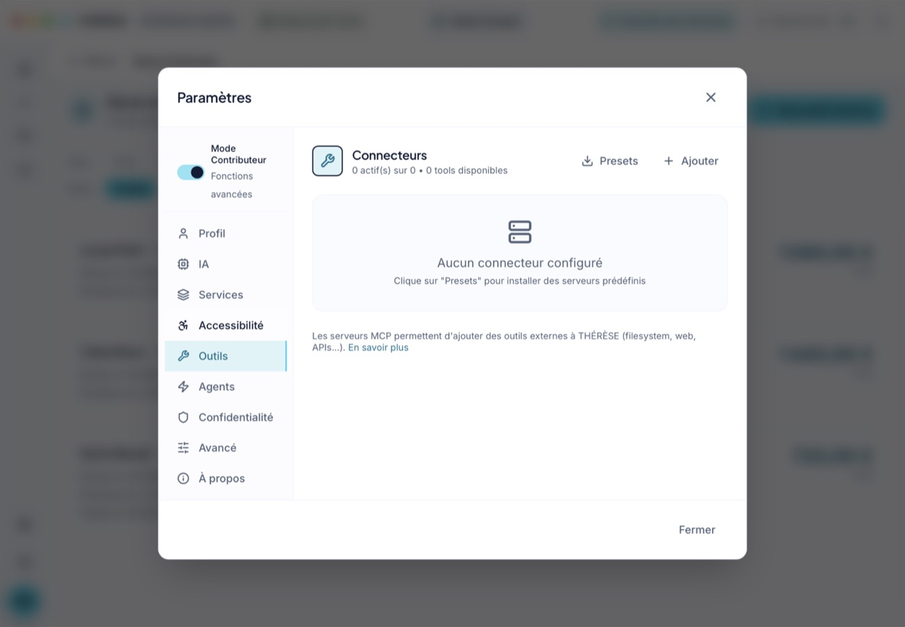
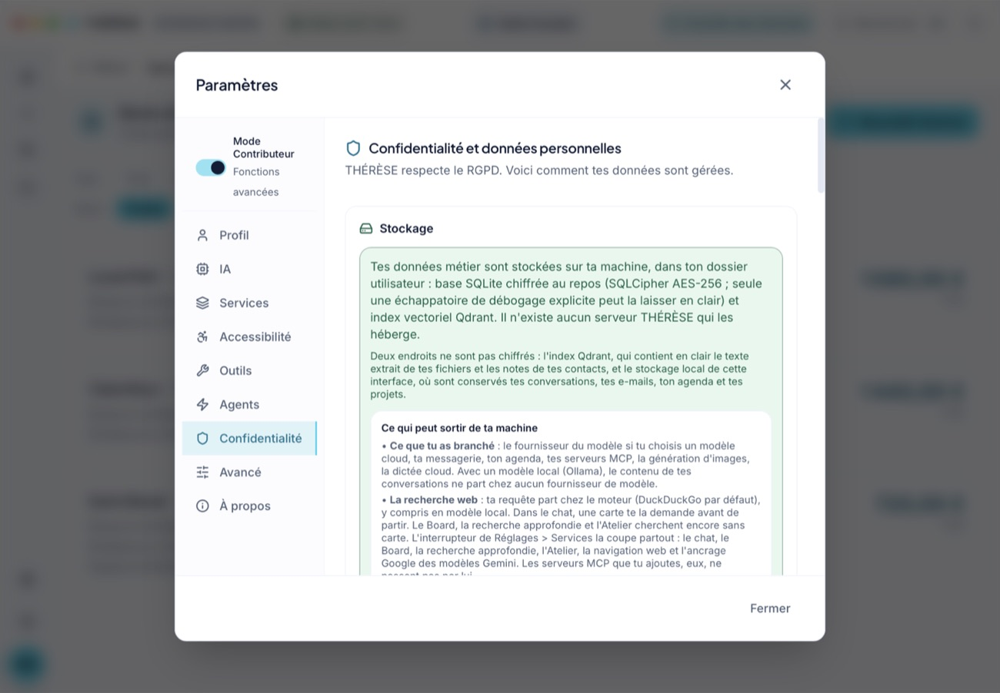
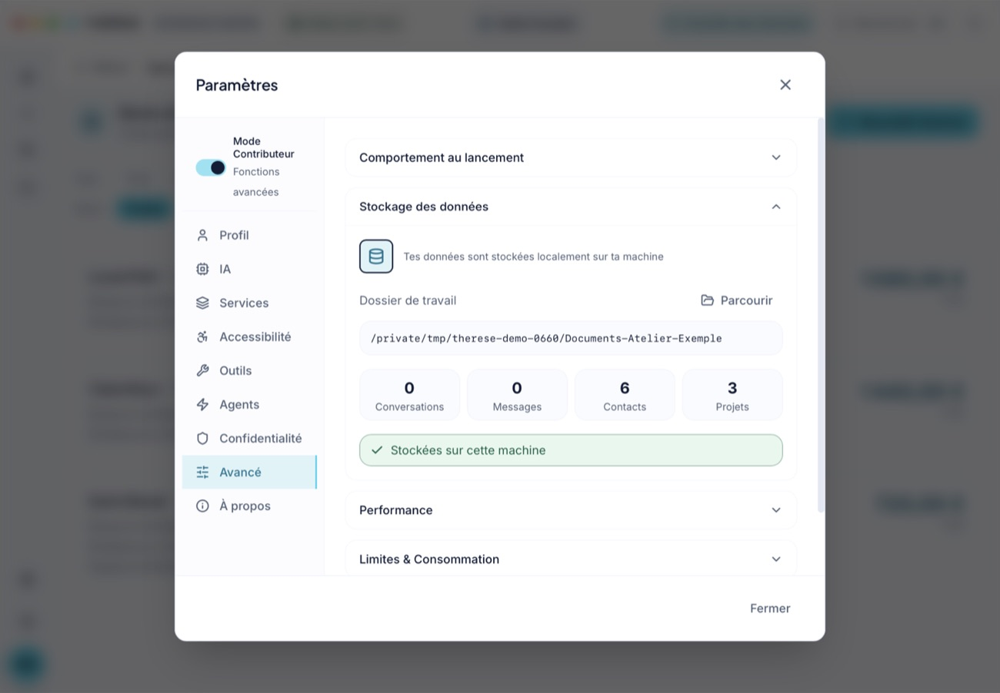
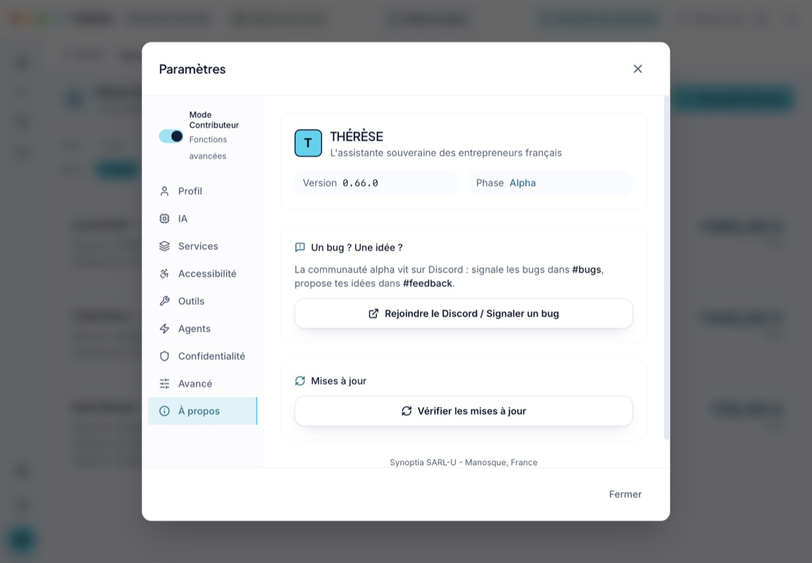
Outils Contributeur. Les connecteurs MCP : combien sont actifs, combien d'outils ils exposent. « Presets » installe un serveur prêt à l'emploi, « Ajouter » en déclare un autre.
Agents Contributeur. L'état de Katia et Zézette (Git, dépôt détecté, branche) et le modèle d'IA de chacune.
Confidentialité. Où sont les données (base SQLite chiffrée, vecteurs Qdrant, clés dans le trousseau), ce qui sort de la machine, et trois gestes : « Exporter toutes mes données », « Créer une sauvegarde » chiffrée par une phrase de passe, et la restauration. C'est aussi ici que se règle le consentement aux services en ligne.
Avancé. Comportement au lancement, stockage des données (le dossier de travail, les compteurs de conversations, messages, contacts et projets, la confirmation « Stockées sur cette machine »), performance, limites et consommation.
À propos. La version installée et la phase (Alpha), le lien vers le Discord pour signaler un bug ou proposer une idée, et « Vérifier les mises à jour ».
Le bouton « Contrôle des données », en haut de chaque écran, ouvre le Centre de confiance. Il dit en cinq lignes ce que Thérèse utilise avant d'agir. Cette page détaille ce qui se cache derrière.
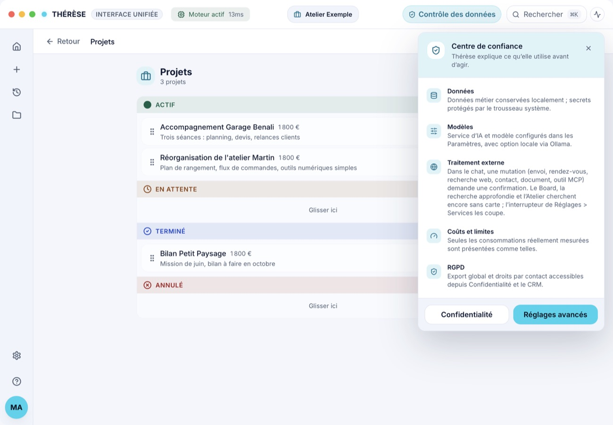
| Sujet | Ce qui se passe |
|---|---|
| Données | Données métier conservées localement ; secrets protégés par le trousseau du système. |
| Modèles | Service d'IA et modèle configurés dans les Paramètres, avec option locale via Ollama. |
| Traitement externe | Dans le chat, une mutation (envoi, rendez-vous, recherche web, contact, document, outil MCP) demande une confirmation. Le Board, la recherche approfondie et l'Atelier cherchent sans carte ; l'interrupteur de Réglages, Services les coupe. |
| Coûts et limites | Seules les consommations réellement mesurées sont présentées comme telles. |
| RGPD | Export global et droits par contact, depuis Confidentialité et le CRM. |
La base de données, chiffrée. Les documents indexés et leurs vecteurs. Les clés d'accès, dans le trousseau. Les sauvegardes, chiffrées par ta phrase de passe. Les journaux, avec les secrets masqués.
Le texte de ta demande et le contexte utile (extraits de documents, contacts concernés) partent vers le service d'IA choisi, seulement s'il est en ligne, et après un accord par finalité et par fournisseur au premier usage. Une recherche web envoie la requête au moteur. Un e-mail part vers ton serveur de messagerie, après confirmation.
Export de toutes tes données en un fichier. Suppression complète depuis Confidentialité. Pour chaque contact : base légale, consentement, dates de collecte et d'expiration, anonymisation à la demande. Le badge « RGPD ? » de la liste des contacts rappelle ce qui reste à renseigner.
Deux apparences, Clair (Équilibre) par défaut et Sombre (Signature), la palette d'origine de THÉRÈSE. Le choix se fait dans Paramètres, onglet Accessibilité, et s'applique à tous les écrans.
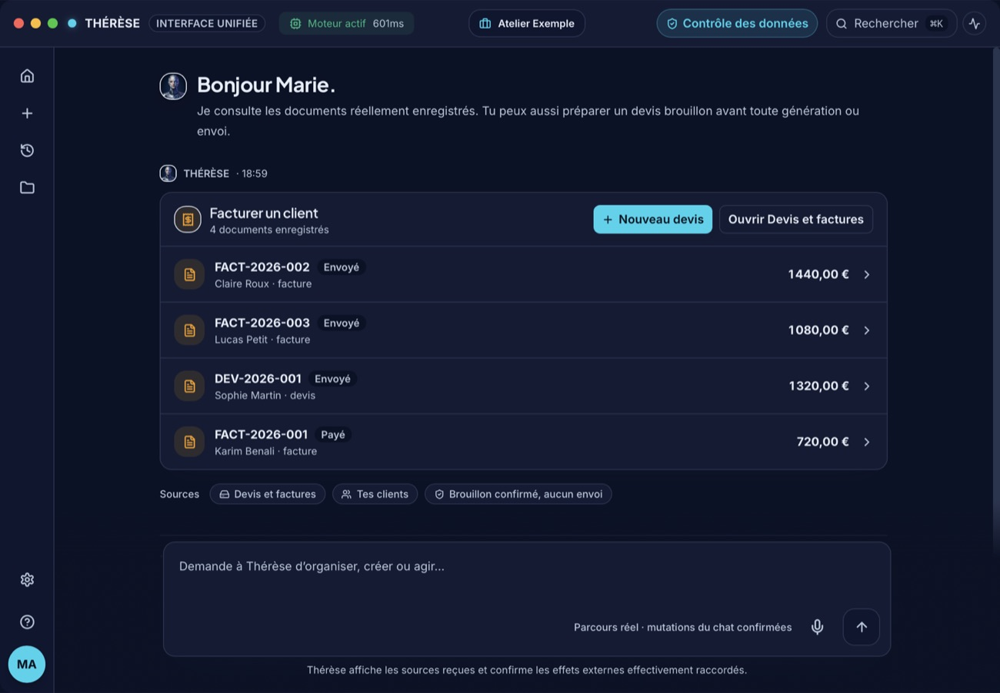
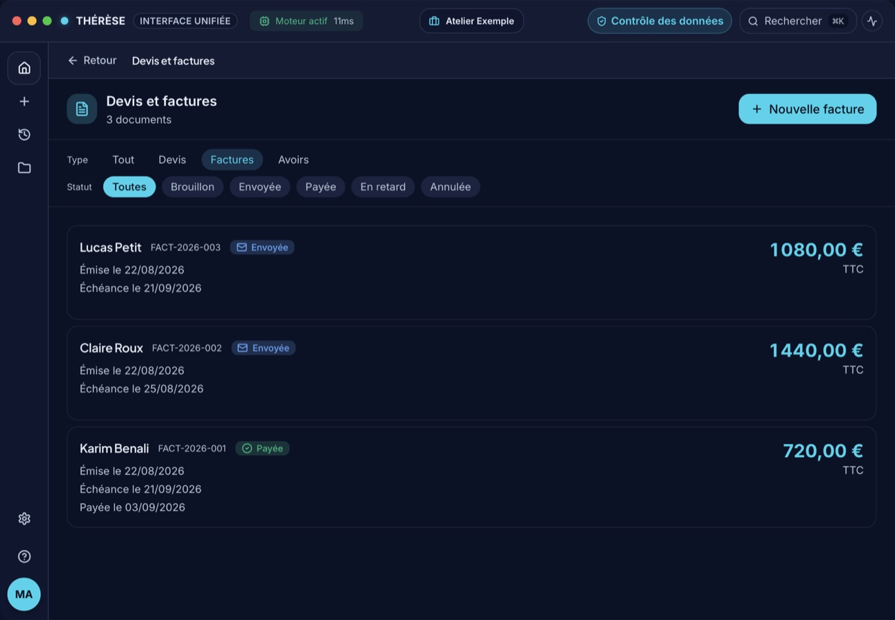
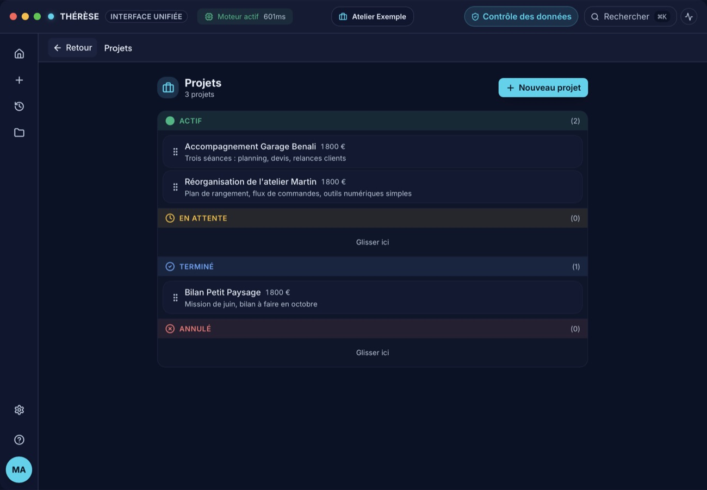
Les couleurs d'état (payée, envoyée, en retard, priorité haute) gardent leur sens dans les deux thèmes. Les fenêtres, panneaux, cartes et boutons suivent le même jeu de tokens, si bien qu'un écran appris en clair se lit sans effort en sombre.
La 0.66 est une version d'assainissement : une boucle d'audit a lu l'intégralité du code, joué des dizaines de parcours d'utilisateurs et fermé 171 défauts visibles à l'usage, chacun verrouillé par un test de non-régression (environ 370 ajoutés). Le détail complet est sur Discord, dans #changelog. Voici l'essentiel.
Facturation électronique au format Factur-X, avec les mentions obligatoires, puis le dépôt sur une plateforme agréée. Franchise de TVA : « TVA non applicable » et sa mention légale sur le PDF. Un devis accepté devient une facture sans rien retaper, et le client se crée depuis la facture.
Clé API vérifiée auprès du fournisseur avant d'être déclarée configurée, compte mail testé avant d'annoncer « configuré », agenda avec « Synchronisé à HH:MM ». THÉRÈSE lit tes tâches dans la conversation. Anonymisation RGPD qui préserve les pièces comptables.
Relevés en préparant ce guide sur l'application installée, pas encore corrigés :
| Je veux… | Je fais… |
|---|---|
| Voir ma journée | Accueil. Le brief regroupe rendez-vous, tâches, relances. Chaque ligne s'ouvre. |
| Préparer un rendez-vous | Puce « Préparer », clic sur l'événement, lire les points à vérifier. |
| Faire un devis | Puce « Facturer », « Nouveau devis », client, lignes, « Enregistrer ». |
| Retrouver ce qu'on s'est dit | Puce « Retrouver », ou une question dans le composeur : Thérèse cite la fiche ou le document. |
| Trancher | Puce « Décider », « Convoquer le Board », question, contexte, lancer. |
| Tout trouver | ⌘ + K, puis un mot. |